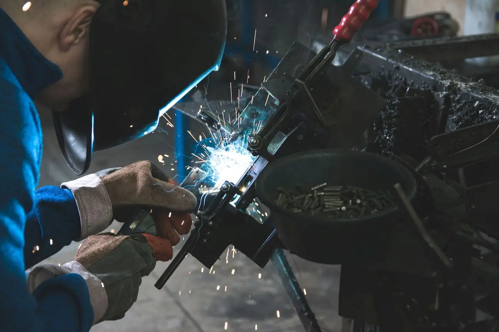

Firmy a provozy
Když se ve výrobě něco utrhne, musí to být rychle zpátky v provozu. Přijedeme, opravíme, a když je potřeba, vyrobíme díl podle vzoru.
- servis a opravy za provozu
- svařence, rámy a podesty podle dokumentace
- svářeči a zámečníci jako subdodávka
- montáže v ČR i v zahraničí